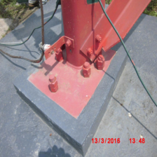
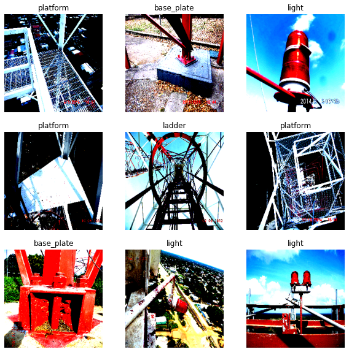
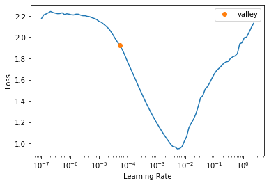

from pathlib import Path
from miniai.datasets import show_images
from torch.utils.data import Dataset
from torch.utils.data import DataLoader
from torch import nn
import torch
import torchvision.transforms as tvtfms
from PIL import Image
import pandas as pd
import plotly.express as px
import plotly.io as pio
from matplotlib import pyplot as pltIntroduction
Zach Mueller proposed us to create a Gradio app as a homework for for the course Walk with fastai, the missing pieces for success.
I had already deployed a Tower Classificacion App as a homework for Practical Deep Learning for Coders.
Here the link to Part 1 post: Part 1. Tower Parts Classisfier with fastai
The new thing here is that everythong but the training is going to be done using pure PyTorch, which was teched in Zach’s course.
Import Libraries
Image Data
There are 478 images in 8 relatively “easy” to distinguish categories (components).
- Base plate
- Grounding bar
- Identification
- Ladder
- Light
- Lightning rod
- Platform
- Transmission lines
You can download the pictures here.
There are two folders, one for the training (train) and the other for validation set (valid).
path = Path("photos")
[folder.stem for folder in path.iterdir()]['train', 'valid']train_path = path / "train"
valid_path = path / "valid"And in each folder there is one folder for each label.
labels = [folder.stem for folder in train_path.iterdir()]
number_of_labels = len(labels)
print(labels)['base_plate', 'grounding_bar', 'identification', 'ladder', 'light', 'lightning_rod', 'platform', 'transmission_lines']int_to_label = {k:v for k,v in enumerate(labels)}
label_to_int = {k:v for v,k in int_to_label.items()}
print(label_to_int){'base_plate': 0, 'grounding_bar': 1, 'identification': 2, 'ladder': 3, 'light': 4, 'lightning_rod': 5, 'platform': 6, 'transmission_lines': 7}Visualizing the distribution o labels
labels = [label.parts[-1] for label in train_path.iterdir()]
train_quantity = [len(list(each.iterdir())) for each in train_path.iterdir()]
valid_quantity = [len(list(each.iterdir())) for each in valid_path.iterdir()]
df = pd.DataFrame()
df['label'] = labels * 2
df['set'] = ['train'] * 8 + ['valid'] * 8
df['number of pics'] = train_quantity + valid_quantityfig = px.bar(
df, x="set", y="number of pics",
color='label', barmode='group',
height=400
)
fig.show()Creating PyTorch Dataset
Dataset Class
This class is based in the amazing Walk with fastai course whose Using Raw PyTorch lesson has the following note in the Dataset code.
This example is highly based on the work of Sylvain Gugger for the Accelerate notebook example which can be found here: https://github.com/huggingface/notebooks/blob/main/examples/accelerate_examples/simple_cv_example.ipynb
class TowerPartsDataset(Dataset):
def __init__(self, path:Path, transforms:nn.Sequential, label_to_int:dict):
self.transforms = transforms
self.paths = [f for folder in path.iterdir() for f in folder.iterdir()]
self.to_tensor = tvtfms.ToTensor()
def __len__(self):
return len(self.paths)
def apply_x_transforms(self, filepath):
image = Image.open(filepath)#.convert("RGB")
tensor_image = self.to_tensor(image)
return self.transforms(tensor_image)
def apply_y_transforms(self, filepath):
label = filepath.parent.name
return label_to_int[label]
def __getitem__(self, index):
filepath = self.paths[index]
x = self.apply_x_transforms(filepath)
y = self.apply_y_transforms(filepath)
return (x, y)Item Transforms
from fastai.vision.data import imagenet_stats
print(imagenet_stats)
item_tfms = nn.Sequential(
tvtfms.Resize((224, 224)),
tvtfms.Normalize(*imagenet_stats)
)([0.485, 0.456, 0.406], [0.229, 0.224, 0.225])item_tfms[0](Image.open(train_path / 'base_plate/CIMG4695.jpg'))
Train and validation datasets
train_dataset = TowerPartsDataset(
train_path,
item_tfms,
label_to_int
)
valid_dataset = TowerPartsDataset(
valid_path,
item_tfms,
label_to_int
)x, y = train_dataset[0]
x.shape, y(torch.Size([3, 224, 224]), 0)Previewing transformed images
The warning occurs because the images has been normalized.
figure = plt.figure(figsize=(10, 10))
cols, rows = 3, 3
for i in range(1, cols * rows + 1):
sample_idx = torch.randint(len(train_dataset), size=(1,)).item()
img, label = train_dataset[sample_idx]
label = int_to_label[label]
figure.add_subplot(rows, cols, i)
plt.title(label)
plt.axis("off")
plt.imshow(img.permute(1, 2, 0))
plt.show()Clipping input data to the valid range for imshow with RGB data ([0..1] for floats or [0..255] for integers).
Clipping input data to the valid range for imshow with RGB data ([0..1] for floats or [0..255] for integers).
Clipping input data to the valid range for imshow with RGB data ([0..1] for floats or [0..255] for integers).
Clipping input data to the valid range for imshow with RGB data ([0..1] for floats or [0..255] for integers).
Clipping input data to the valid range for imshow with RGB data ([0..1] for floats or [0..255] for integers).
Clipping input data to the valid range for imshow with RGB data ([0..1] for floats or [0..255] for integers).
Clipping input data to the valid range for imshow with RGB data ([0..1] for floats or [0..255] for integers).
Clipping input data to the valid range for imshow with RGB data ([0..1] for floats or [0..255] for integers).
Clipping input data to the valid range for imshow with RGB data ([0..1] for floats or [0..255] for integers).
DataLoader
batch_size = 64train_dataloader = DataLoader(
train_dataset,
shuffle=True,
drop_last=True,
batch_size=batch_size
)valid_dataloader = DataLoader(
valid_dataset,
batch_size=batch_size*2
)Creating a PyTorch Model
When loading a model to fastai learner, it is customized by changing the last two children (the Head).
What we are going to do here is to change only what is essential for our problem, that is, the final linear layer in order to have 8 features (the number of labels need to classify).
For more detail on this I encourage you to take Walk with fastai, the missing pieces for success
from torchvision.models import resnet18, resnet34
model = resnet34(pretrained=True)Customizing the last linear layer
These are the two layers that are changed by fastai when creating the learner:
model_child = list(model.children())
model_child[-2:][AdaptiveAvgPool2d(output_size=(1, 1)),
Linear(in_features=512, out_features=1000, bias=True)]We can access the original final layer with model.fc
model.fcLinear(in_features=512, out_features=1000, bias=True)It has the 1,000 features resnet was trained for. We need to change it to the 8 features (labels, classes) of the problem we are dealing here:
model.fc = nn.Linear(512, out_features=number_of_labels, bias=True)model.fcLinear(in_features=512, out_features=8, bias=True)Gradual Unfreezing
One other thing fastai does is it freeze the backbone (Body) of the model. We can achieve that as follows:
"""for layer in list(model.children())[:-1]:
if hasattr(layer, "requires_grad_"):
layer.requires_grad_(False)""";
Note
Zach used gradual unfreezing and fit_one_cycle in Walk with fastai, the missing pieces for success. Here I’m going to use fine_tune instead to compare with results in Part 1.
The Optimizer
Let’s use the same optimizer as fastai’s default: AdamW
from torch.optim import AdamW
from functools import partial
from fastai.optimizer import OptimWrapperopt_func = partial(OptimWrapper, opt=AdamW)Bringing in fastai and Training!
from fastai.losses import CrossEntropyLossFlat
from fastai.metrics import accuracy, error_rate
from fastai.learner import Learner
from fastai.callback.schedule import Learner # To get `fit_one_cycle`, `lr_find`, and more
from fastai.data.core import DataLoadersmodel.cuda();dls = DataLoaders(train_dataloader, valid_dataloader)learn = Learner(
dls,
model,
opt_func=opt_func,
loss_func=CrossEntropyLossFlat(),
metrics=error_rate
)%%time
learn.lr_find()CPU times: user 1h 46min 47s, sys: 12min 46s, total: 1h 59min 33s
Wall time: 22min 55sSuggestedLRs(valley=5.248074739938602e-05)
Note
In Part 1 it took 5 minutes for lr_find() to run, and the suggested lr was about 0.001. Now, with PyTorch’s Dataloaders things got very different. Should keep digging in the causes.
Fine Tuning
fine_tuning is geared towards transfer learning specifically. “fine_tune” vs. “fit_one_cycle”
fine_tune does one epoch to train only the last layer (the linear layer we just modified). It means that the parameter of all the other layers are not changed, are “freezed”. But after that epoch, all the model is “unfreezed” and trained. So the parameters of all its layers are updated or optmized.
%%time
learn.fine_tune(3)| epoch | train_loss | valid_loss | error_rate | time |
|---|---|---|---|---|
| 0 | 1.041510 | 1.549582 | 0.283333 | 02:02 |
| epoch | train_loss | valid_loss | error_rate | time |
|---|---|---|---|---|
| 0 | 0.095129 | 1.055718 | 0.208333 | 01:59 |
| 1 | 0.171666 | 2.795403 | 0.300000 | 02:02 |
| 2 | 0.146215 | 0.879028 | 0.166667 | 02:01 |
CPU times: user 35min 42s, sys: 4min 46s, total: 40min 29s
Wall time: 8min 7slearn.fit(2, lr=5.25e-05)| epoch | train_loss | valid_loss | error_rate | time |
|---|---|---|---|---|
| 0 | 0.047634 | 0.423191 | 0.116667 | 02:00 |
| 1 | 0.033922 | 0.314130 | 0.100000 | 01:58 |
from fastai.interpret import ClassificationInterpretation
try:
interp = ClassificationInterpretation.from_learner(learn)
interp.plot_confusion_matrix(figsize=(8,8))
except Exception as inst:
print(inst)'DataLoader' object has no attribute 'new'learn.save("exported_model_from_pytorch-fastai", with_opt=False)Path('models/exported_model_from_pytorch-fastai.pth')Conclusions
- For some reason when starting with a PyTorch Dataloader
lr_findtakes more than 20 minutes to run. 4 times what it took in Part 1 where fastai’s Dataloaders were used. - It takes 2 minutes to train each epoch, which in Part 1 took less than a minute.
- The error rate wasn’t that good after the 3 epochs of fine tuning. 16% vs 6% in Part 1. It took two more epochs with the learning rate suggested by
lr_findto lower the error rate to 10%. Maybe the customized fastai head plays an important role here. - fastai’s
Dataloaderscreated from PyTorch’sDataloadermissed some attributed needed for fastai’sClassificationInterpretationto run.